Cinco motores locais, clonagem a partir de uma amostra curta
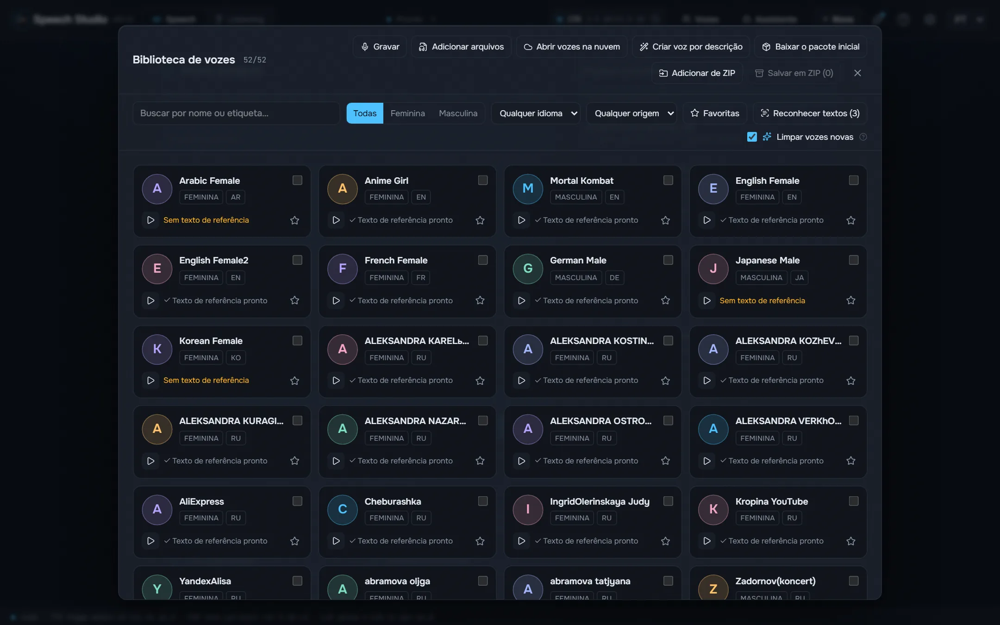
Higgs Audio v3, Fish Audio Drama 3, Supertonic 3, Qwen3-TTS e Qwen3-TTS com acento russo rodam na sua placa.
Um estúdio de desktop que dá voz ao texto com cinco motores locais e transforma gravações de volta em texto com quem fala.
Windows 10/11 x64 e uma placa NVIDIA com 8 GB de memória de vídeo. Modelos e motores são baixados de dentro do estúdio, quando você decidir.
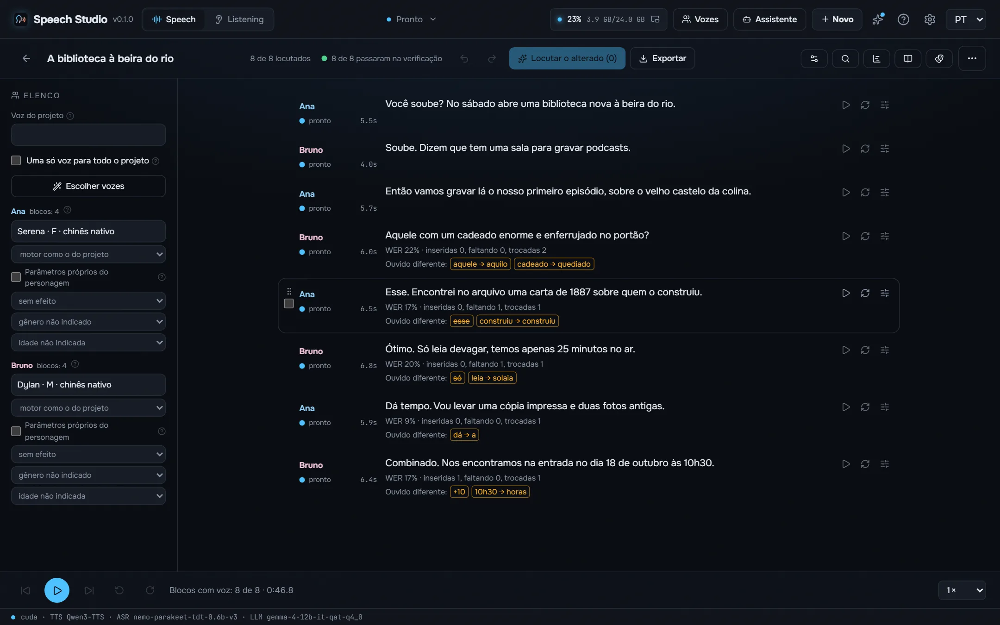
Feitos neste computador com o estúdio como é distribuído, cada take verificado de ouvido e exportado como o estúdio o salvou. Todos os motores leem o mesmo texto.
Amor é fogo que arde sem se ver, é ferida que dói, e não se sente; é um contentamento descontente, é dor que desatina sem doer.
Я помню чудное мгновенье — передо мной явилась ты, как мимолётное виденье, как гений чистой красоты.
Встреча 12.03 в 18:30, билет стоит 150 руб., а на улице −5 °C.
Shall I compare thee to a summer's day? Thou art more lovely and more temperate: rough winds do shake the darling buds of May, and summer's lease hath all too short a date.
¿Qué es poesía?, dices mientras clavas en mi pupila tu pupila azul. ¿Qué es poesía? ¿Y tú me lo preguntas? Poesía… eres tú.
Il pleure dans mon cœur comme il pleut sur la ville ; quelle est cette langueur qui pénètre mon cœur ?
床前明月光，疑是地上霜。举头望明月，低头思故乡。
As vozes de pessoas conhecidas são síntese: um clone feito a partir de uma amostra curta do pacote de vozes do estúdio, não uma gravação dessas pessoas. Os poemas são de domínio público.
Supertonic 3 e Qwen3-TTS colocam o acento russo ao acaso. O estúdio o marca antes que o motor leia: RUAccent escolhe замо́к ou за́мок, му́ки ou муки́ pela frase, e números, datas e unidades são escritos por extenso no caso certo.
Старинный замок стоял на холме, а дверь в него запирали на тяжёлый замок. Из этой муки пекут хлеб, но для пекаря это настоящие муки.
Мы долго стояли у берега и смотрели, как белки прыгают по веткам. В яйце много белка, а в этой задаче много лишних белков.
Medido numa RTX 4090 no Windows 11 com o Speech Studio 0.2.0 como é instalado: o mesmo texto russo de 17 segundos, a segunda execução de cada motor, com o modelo já carregado. O primeiro som é o tempo até o áudio começar na janela; a memória de vídeo é o pico enquanto fala.
| Motor | Para | Mais rápido que o tempo real | Primeiro som | Streaming | Download | Memória de vídeo |
|---|---|---|---|---|---|---|
| Supertonic 3 | O mais rápido, vozes fixas sem clonagem | 168× | 103 ms | Por frase | 0,1 GB | 1,0 GB |
| Qwen3-TTS | Rápido, vozes predefinidas e clonagem | 12× | 19 ms | Enquanto fala | 2,2 GB | 3,1 GB |
| Qwen3-TTS + ru stress LoRA | Russo com a acentuação certa, clonagem | 10× | 26 ms | Enquanto fala | 2,3 GB | 3,5 GB |
| Fish Audio Drama 3 | A melhor interpretação e qualidade, clonagem; a partir de 6 GB de memória de vídeo | 7,0× | 326 ms | Enquanto fala | 21,4 GB | 21,9 GB |
| Higgs Audio v3 | Emoções e sons por tags, clonagem | 2,3× | 1,0 s | Enquanto fala | 5,3 GB | 18,1 GB |
Medido no mesmo computador com o Speech Studio 0.2.1 (Whisper 0.2.4) como é instalado: uma gravação russa de 5 minutos de uma só voz transcrita no Listening sem separar falantes, com o carregamento do modelo incluído. × indica quantas vezes mais rápido que a duração da gravação; a memória de vídeo é o pico durante a tarefa, e o modelo a libera ao terminar.
| Modelo | Para | Na placa | No processador | Idiomas | Download | Memória de vídeo |
|---|---|---|---|---|---|---|
| Parakeet TDT v3 | Rápido e preciso, detecta o idioma sozinho | 96× | 33× | 25 | 0,7 GB | 1,2 GB |
| Parakeet Ultra | Parakeet ajustado pela Moondream: menos erros de reconhecimento | 73× | 33× | 25 | 0,7 GB | 1,0 GB |
| Nemotron 3.5 | O idioma é definido, sem palavras soltas de outro | 73× | 29× | 28 | 0,7 GB | 1,0 GB |
| Whisper large-v3-turbo | O que reconhece mais idiomas | 19× | 2,2× | 99 | 1,6 GB | 1,6 GB |
Cada etapa de uma vez da conversa, medida no mesmo computador. A etapa mais longa é o próprio agente pensando, e depende do agente e do seu modelo.
| Sua frase em texto depois que você para de falar (Parakeet na placa, incluída a pausa que encerra a frase) | 641 ms – 735 ms |
| O agente escreve a resposta (Claude Sonnet, medido) | 2,0 s – 3,9 s |
| Primeiro som da resposta (por motor, veja acima) | 19 ms – 1,0 s |

Higgs Audio v3, Fish Audio Drama 3, Supertonic 3, Qwen3-TTS e Qwen3-TTS com acento russo rodam na sua placa.
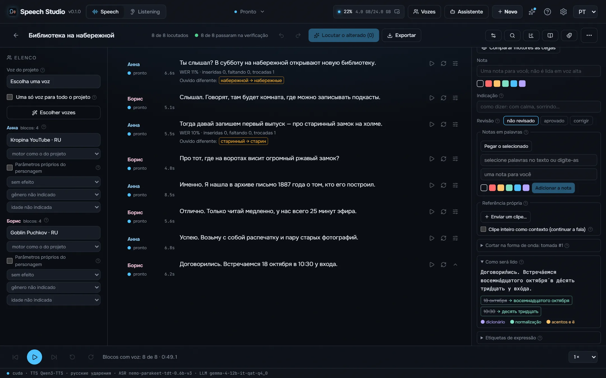
Números no caso e gênero certos, datas, horas, valores e unidades são escritos por extenso antes que o motor leia.
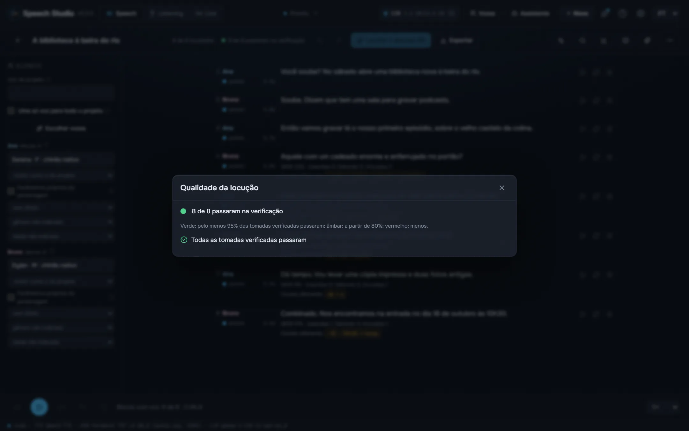
Cada take é reconhecido de volta e comparado ao texto palavra por palavra, com verificações de saturação, silêncio, corte, clique, frase repetida e ruído no lugar da fala.
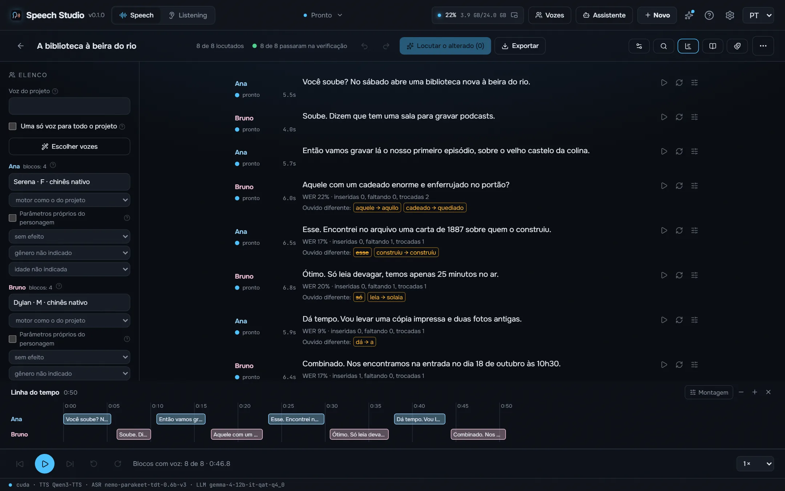
Linhas «Ana:» e «[Ana]» viram personagens com suas próprias vozes, o diretor escreve um podcast sobre um tema para várias vozes e a linha do tempo mostra cada sobreposição.
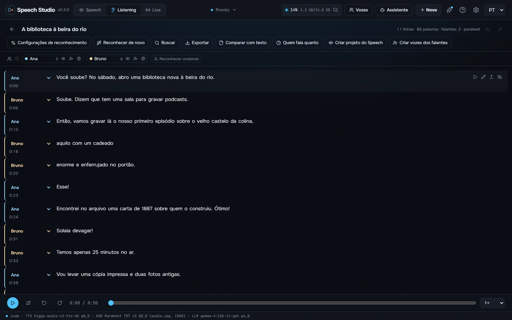
Uma gravação, um vídeo ou um link vira uma transcrição com quem disse o quê e quando: Parakeet-TDT, Nemotron 3.5 ou Whisper, até oito falantes, player karaokê, corte pelo texto e exportação em SRT, VTT, ASS, TXT ou JSON.
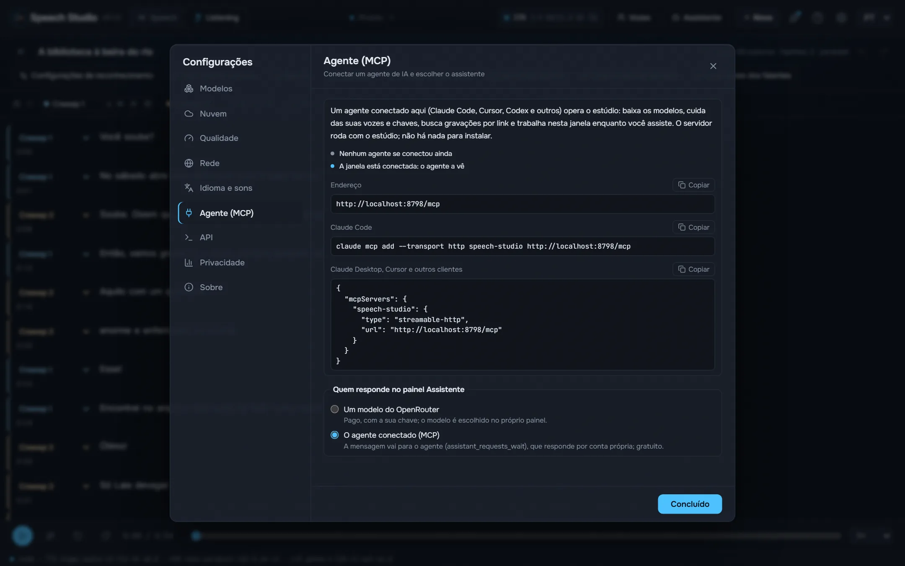
Com o estúdio aberto, um agente como Claude Code ou Cursor faz por MCP tudo o que a janela faz: dá voz a um texto num arquivo, edita projetos, distribui vozes, transcreve e verifica gravações.
O próprio estúdio, no seu idioma.
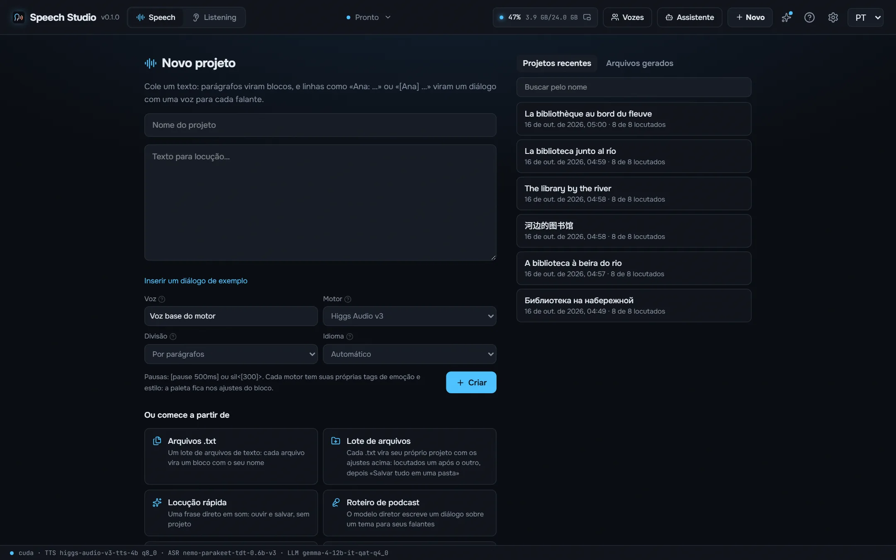
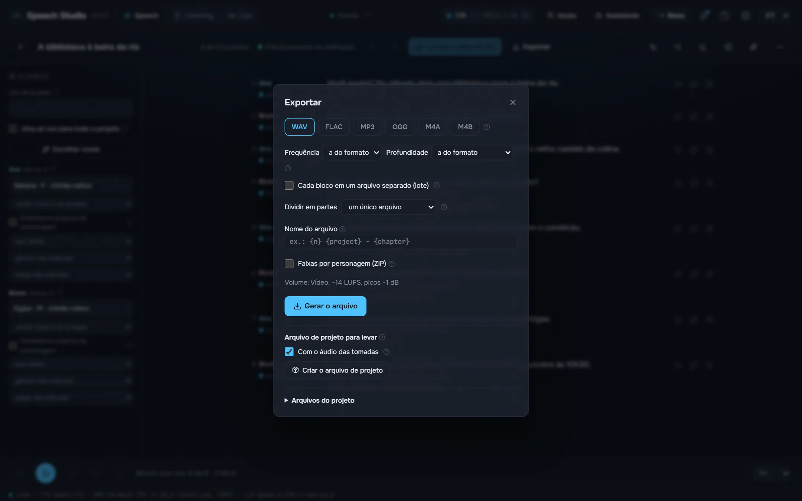
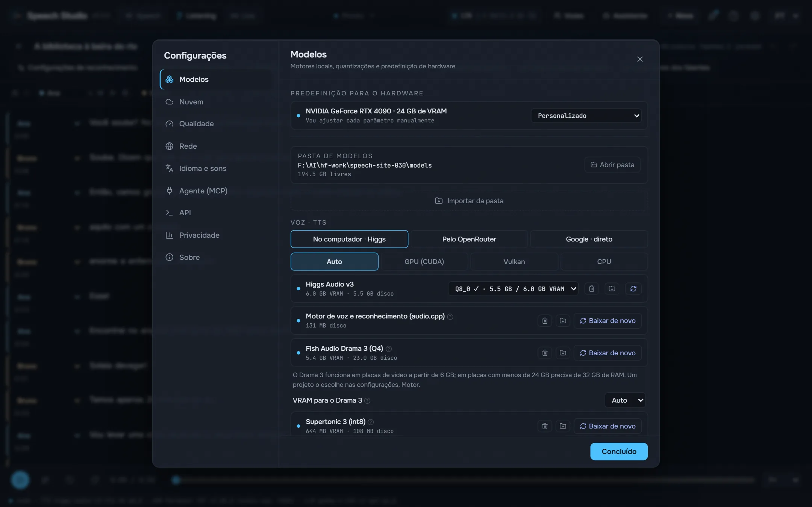
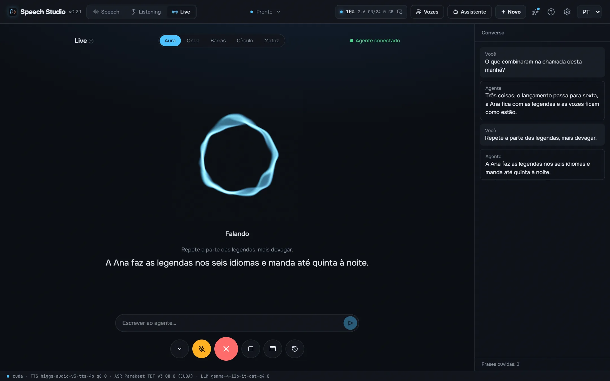
Uma NVIDIA com 8 GB de memória de vídeo ou mais e um driver recente. Drama 3 cabe inteiro em 24 GB; a partir de 6 GB seus especialistas ficam na RAM, que então precisa de 32 GB. Cerca de 9 GB de disco para os modelos e motores padrão.
Sim. O estúdio é gratuito e de código aberto, e os modelos são baixados de graça de dentro dele.
Seus textos e gravações são seus e ficam no seu disco.
Números no caso e gênero certos, datas, horas, valores e unidades são escritos por extenso antes que o motor leia. O acento, o «ё» e os homógrafos são colocados pelo RUAccent pela frase.
Supertonic 3 e Qwen3-TTS colocam o acento russo ao acaso. O estúdio o marca antes que o motor leia: RUAccent escolhe замо́к ou за́мок, му́ки ou муки́ pela frase, e números, datas e unidades são escritos por extenso no caso certo.
O estúdio é MIT. Os modelos não: cada um mantém sua própria licença, listada no README. Leia-as antes de publicar ou vender o que você gravar. README
Com o estúdio aberto, um agente como Claude Code ou Cursor faz por MCP tudo o que a janela faz: dá voz a um texto num arquivo, edita projetos, distribui vozes, transcreve e verifica gravações. Ferramentas escritas para o áudio da OpenAI funcionam pela sua API compatível.
claude mcp add --transport http speech-studio http://127.0.0.1:8797/mcp
O serviço é compilado dentro do exe de desktop e roda os motores no mesmo processo pelos seus C ABI. Nenhum processo Python em execução.
React UI ─┐
├─ Speech Studio.exe (Tauri window + Rust/axum speech-server)
Rust axum ┘ │
├─ Higgs Audio v3, Drama 3, Qwen3-TTS (C++/CUDA, GGUF)
├─ Parakeet, Nemotron 3.5 (transcribe.cpp, GGUF)
└─ Supertonic, RUAccent (ONNX Runtime)